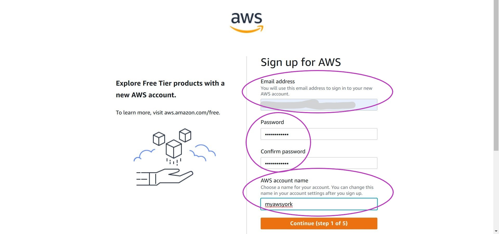
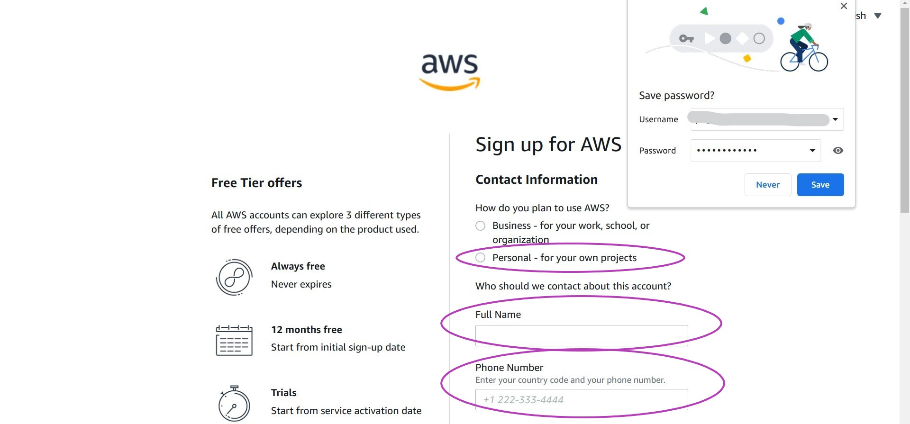
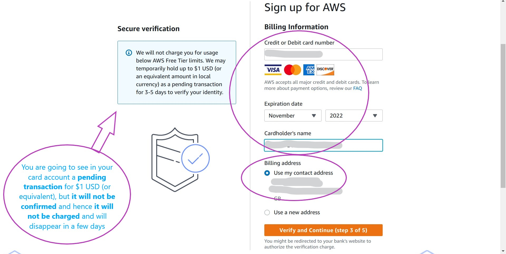
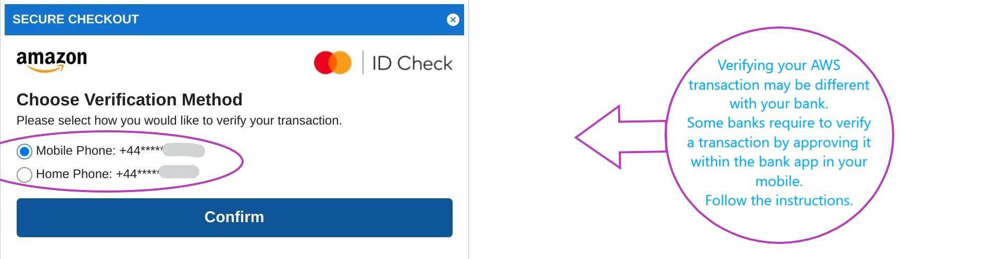
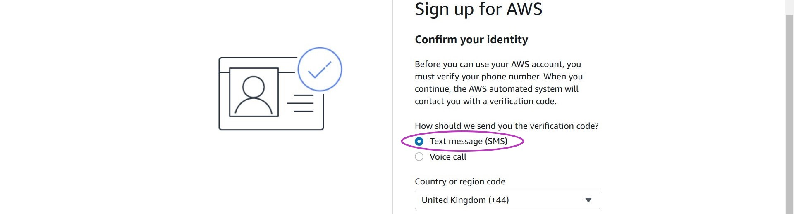
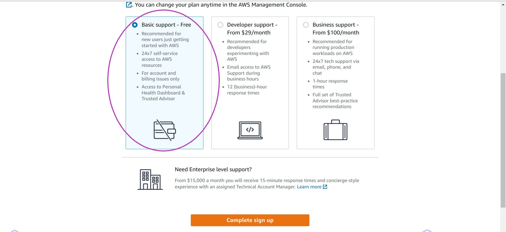
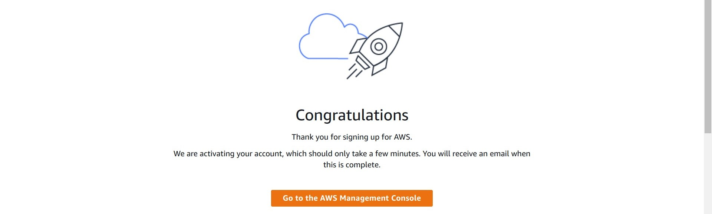
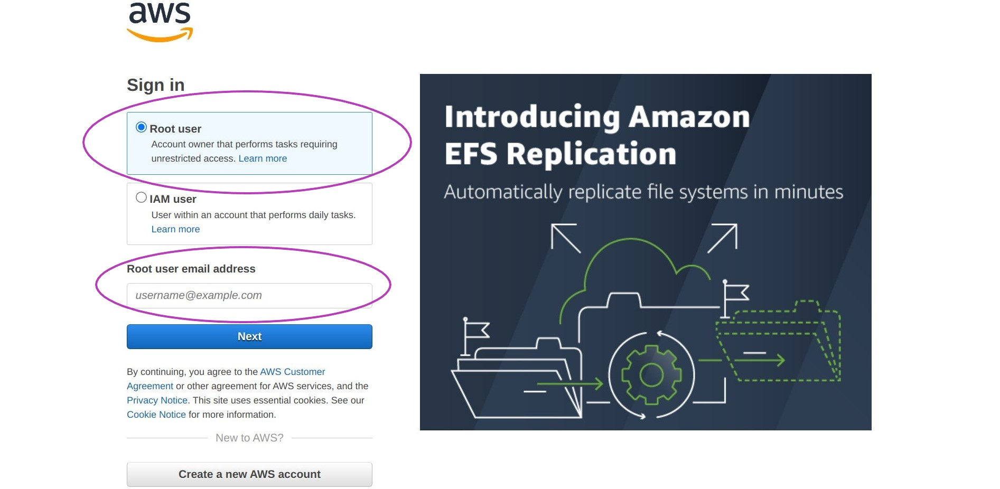
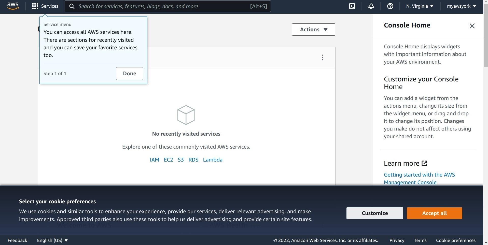

Create Your AWS Account
Please read Workshops Organisation if you haven’t done so.
If you are attending a workshop using a Cloud-SPAN AWS account, you don’t need to complete this episode.
If you are self-studying the course or attending a workshop using your AWS account, you must complete this episode and for that you will need:
- an email address
- a credit card — new accounts get one-year of AWS Free Tier but a card number must be entered on creating an account
- the phone number associated with the credit card
- the address associated with the credit card
Introduction
These are the main steps you will follow to open your AWS account:
- Sign-up to AWS with your email (as username) and password.
- Select your account type (Personal) and enter your contact information.
- Enter Billing Information: your credit card details.
- Confirm your identity to AWS through a phone call or SMS message.
- Select support plan (Basic) and complete sign-up.
- Login to your AWS account.
1. Sign-up to AWS with your email and password
Go to the AWS sign-up page by going to AWS sign-up — for convenience, right click on the link and, in the menu that pops up, left click on Open link in new window; you can switch between this browser window and the sign-up page window to be opened by pressing the keys Alt-Tab simultaneously.
Enter your email and password and a name for your account — you can change the name of your account later.

- New accounts are all granted the one-year Free Tier (message on the left).
- The name of an account helps to identify the account once the user is logged in, as it is not uncommon for AWS users to have more than one AWS account.
Once you have entered your email, password and account name, click on Continue (step 1 of 5) and complete the Security check box that will pop up by typing the characters displayed into the box. Click on Continue (step 1 of 5) again.
2. Select your account type (Personal) and enter your contact information
The next page asks you How do you plan to use AWS? Choose Personal and enter your name, phone number and address — your address must be the one associated with your credit card and this will be verified in the next step.
Then read the AWS Customer Agreement and check the box I have read and agree to the terms of the AWS Customer Agreement. Finally, click on Continue (step 2 of 5) to move to step 3.

- There is no functional difference between a business account and a personal account. Both have access to all AWS services and both support managing sub-accounts which, as we will see in the next episode, are more convenient for every day work.
- A personal account should not be opened with a work email address as you may change jobs after opening the account. A business account should be opened with a company or institution address linked to a roll or position and not to a person who may change jobs at some point.
3. Enter Billing Information: your credit card details
Now you are asked for your credit card details. Note that your credit card will be verified once you click on the orange button Verify and Continue (step 3 of 5) and that you must select/provide the address associated with your credit card.
Please note the Secure verification message on the left: AWS will make a small charge (equivalent to $1 USD) on your card to verify it and the charge will appear in your card account as a pending transaction that will not be confirmed by AWS, and hence it will not be charged and will disappear from your account in 3-5 days.

As part of the card verification process, a pop-up window from your bank or financial institution may appear and ask you to verify the AWS transaction. Choose the (Mobile or Home) phone registered with your card to receive the passcode, click on Confirm, and once you receive the passcode enter it as required.

4. Confirm your identity to AWS through a phone call or SMS message
You now need to confirm your identity to AWS through an SMS message or a phone call to the phone number that will be associated with your AWS account (we used the same phone number we entered in step 2).
Please select SMS message or phone call, enter your phone number and the characters in the security check box, and finally click on Send SMS (step 4 of 5). After you enter the code, you will receive the SMS or a phone call within a few seconds.

5. Select support plan (Basic) and complete sign-up
You must now select a support plan. Select the Basic support - Free plan and click on Complete sign-up. The Basic support plan is free and you don’t need more if this is your first AWS account.

The congratulations page will then be displayed.
You will also receive three emails from AWS with the Subjects:
- “Welcome to Amazon Web Services”
- “AWS Support (Basic) Sign-Up Confirmation”
- “Your AWS Account is Ready - Get Started Now”
These emails have links to useful information and resources.

6. Login to your AWS account
From the congratulations page click on Go to the AWS Management Console where you will be able to sign in.
Login to your Root user account by entering the email address that you used to open your account in step 1 and click on the Next button.

You will then be prompted to:
- Enter some characters by a “Security check” box and then your password
- Select either the previous or the new version of the Console Home (please choose the new version)
- Select your cookie preferences (select as you prefer).
- The login page gives the option to login either as the Root user or as an IAM user — IAM stands for Identity Access Managment.
- The Root user account is for the owner of the account who “performs tasks requiring unrestricted access”, such as updating billing information or deleting the account, while an IAM user account is for a user who “performs daily tasks” such as using AWS services.
- At this stage you can only login to the Root user account. In the next episode you will create an IAM account which you will use to create and manage AWS resources.
Finally you will be logged in as the Root user to the Console Home screen shown below, able to use your account. We will first configure your account in the next episode.

As you eventually will logout from your account, please make a note of the address to log back in to the AWS Managment Console: aws.amazon.com/console or https://aws.amazon.com/console.